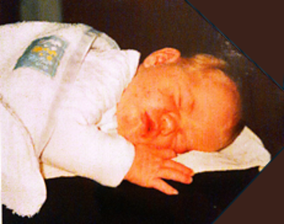
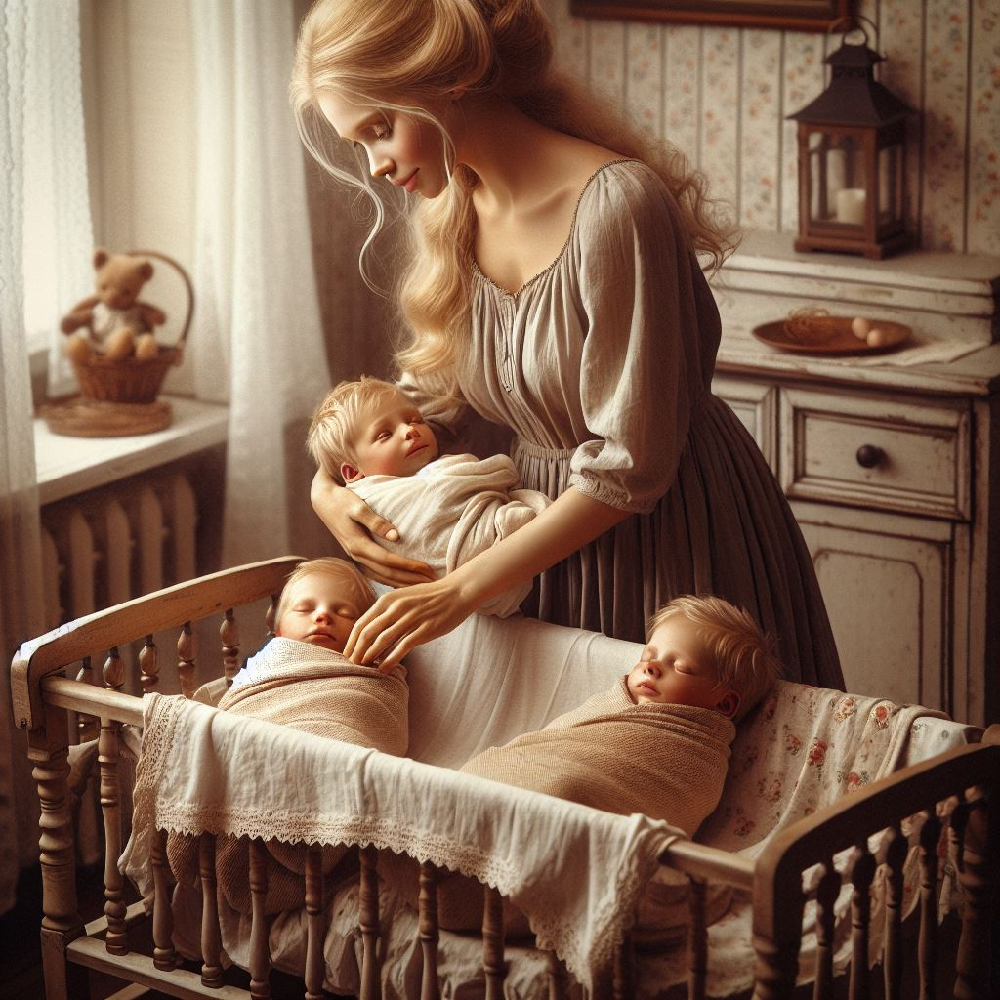

Deze website is in elkaar geknutseld voor Juul en haar 3 mukjes
|  |
|
|
Tsja Juul, zo'n lief klein babietje, maar dan 3 keer. En nog erger: 2 mannelijke Juultjes, ga er maar eens aan staan.
Zo ziet AI in Disney stijl jouw toekomst:

Als je hier genoeg van hebt en toe bent aan een volgende stap, stuur een berichtje naar me op What'sApp (2Bcontinued...)